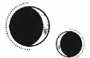

CAPÍTULO 63
Augustus 1787
Al día siguiente, el tiempo pareció ralentizarse mientras desalojaban el Cuartel General y los soldados se dirigían a sus respectivos puestos de combate. Helena no tuvo ocasión de hablar con Luc antes de que este partiera.
El resto de las sanadoras, el equipo médico y ella misma prepararon el hospital a la espera de recibir las primeras noticias y heridos. Por la hora que marcaban las manecillas del reloj, la bomba ya debería haber estallado. Sin embargo, no se oyó explosión alguna ni sintieron una sacudida.
No había nada que indicara que la batalla hubiese comenzado.
Por supuesto, cabía esperar que la bomba, pequeña y diseñada para estallar en un espacio cerrado, no generara una onda expansiva detectable desde tan lejos. Además, la mayor parte del enfrentamiento tendría lugar en la isla Oeste.
Saber todo aquello no hacía que la espera fuera más llevadera. Helena presentía que la guerra estaba llegando a su fin después de tantos años y ninguno de los posibles desenlaces le resultaba reconfortante.
Tal vez la Resistencia lograba la victoria, a lo mejor todo salía bien, pero entonces Kaine se vería obligado a desaparecer y ella no tendría forma de saber si estaba vivo o muerto, si había quedado atrapado entre los escombros o si había conseguido huir muy lejos.
Tendría que salir a buscarlo para averiguarlo.
El tictac del reloj hacía que se estremeciera. Las camilleras, las médicas y las sanadoras charlaban entre ellas, pero Helena permanecía inmóvil, con las costillas constriñéndole los pulmones.
«Has cometido un error, has fabricado mal la bomba y han capturado a Kaine mientras la colocaba y ahora lo están torturando, pero tú no sabes nada. Todo el mundo va a morir por tu culpa».
Empezó a notar que el hormigueo del entumecimiento se le extendía por los dedos y las manos.
Entonces las puertas del hospital se abrieron de par en par. La estancia pareció desdibujarse. Helena no pudo distinguir quién había entrado, pero oyó los gritos: se había producido una explosión en la isla Oeste. La Resistencia había atacado.
Helena se tambaleó intentando sentir algo, pero todavía seguía vacía por dentro.
Un estallido de calor le recorrió el dedo una única vez.
Se miró la mano, el anillo apenas visible, y le cedieron las piernas.
Se derrumbó y se echó a llorar mientras un estallido de dolor le partía el pecho en dos. Oyó voces a su alrededor, pero no alcanzó a entender lo que decían. Lo único que parecía capaz de hacer era tomar aire, pero sus pulmones se negaban a cooperar.
Una mano cálida la agarró del codo y la ayudó a incorporarse.
—Sentémonos un momento —dijo Pace al tiempo que le pasaba un brazo por los hombros y la guiaba hasta su pequeño despacho, en el cuarto de los informes—. Elain nos avisará si traen a algún herido.
Helena, que se dejó llevar con los ojos cerrados cuando Pace la obligó a sentarse en una silla, se tocó el pecho para notar la cicatriz oculta bajo las ropas e intentar que el ritmo de sus latidos se relajara.
Cuando por fin abrió los ojos de nuevo, encontró a Pace observándola.
—¿Qué te pasa? —le preguntó.
—Nada —dijo negando con la cabeza—. Es solo que estoy cansada.
Pace esbozó una mueca que le arrugó todo el rostro.
—¿Sabías que llega un punto en que los efectos del Estrago se disparan y crecen exponencialmente?
Helena se encogió de hombros.
—Se dicen muchas cosas sobre las sanadoras. Empiezo a sospechar que ni la mitad son ciertas.
—Tal vez, pero no creo que nadie haya llevado su don para la sanación tan lejos como tú. Hace ya un tiempo que no te encuentras bien. ¿Pensabas que no me iba a dar cuenta de que estás complementando tus tratamientos con tónicos e inyecciones? Las aprendizas apenas saben manejarse sin ellos, pero tú has pasado años apoyándote únicamente en tu resonancia. Por lo que sabemos, podrías estar perdiendo años de vida cada vez que…
—No creo que sea eso…
Se llevó distraídamente la mano a la cadena que solía pender de su cuello, pese a que hacía tiempo que ya no la llevaba.
Pace meneó la cabeza con gesto preocupado.
—¿Es por el anulitio? Estamos viendo muchos efectos secundarios desde el bombardeo y tú has sido una de las supervivientes que más expuesta ha estado a la sustancia. Y eso sin contar tu lesión. —Antes de que Helena pudiera negarlo, Pace continuó—: No sabemos qué efectos puede tener a largo plazo. Sospecho que las fiebres que Luc está sufriendo apuntan a que tiene restos de anulitio en el cerebro.
Helena la miró confundida.
—¿Luc está sufriendo episodios febriles?
Pace suspiró.
—Ya viste cómo llegó tras el rescate.
—Pensaba que había sido algo pasajero —apuntó Helena con un asentimiento.
—Intenta disimular para que no nos preocupemos, pero a veces se pone tan mal que delira, se araña la piel y no deja que nadie entre en su habitación. Ni siquiera Sebastian. Y grita cosas como «Sacádmelo de dentro». Elain ha tenido que sedarlo varias veces para que no se haga daño.
Helena tenía la sensación de haber pasado meses mirando un rompecabezas desde el ángulo incorrecto. De pronto lo entendía todo.
—¿Dice «Sacádmelo de dentro»? —Oía su propia voz como si llegara de muy lejos.
—Es lo que más repite.
Le dio un vuelco el corazón.
—¿Podrías… describirme las fiebres que sufre?
Pace frunció el ceño.
—Bueno, yo solo lo he examinado un par de veces. Es Elain quien lleva su caso, porque se muestra más dispuesto a cooperar con ella. Cree que la fiebre se debe a una inflamación del cerebro. Los síntomas que presenta son delirios y taquicardias. Al principio pensábamos que se debía a las lesiones orgánicas, pero ahora creemos que son afecciones separadas.
—¿Y el opio para qué es?
La mujer suspiró y miró hacia otro lado.
—Todo apunta a que lo que le causa las fiebres es alguna afección nerviosa. Mantenerlo calmado impide que le suba la temperatura más de la cuenta. Lo hemos intentado todo, pero inhalar los vapores del opio es lo único que le funciona. Cuando las alucinaciones toman el control de su cuerpo, tarda días en recuperarse y requiere un tratamiento intensivo.
—Pero de esa manera solo se consigue… enmascarar los síntomas. Así no se va a curar. Deberíais haberme contado lo que estaba pasando.
Era imposible.
—Helena —dijo la enfermera Pace con firmeza—, tanto Maier como Elain y yo le hemos hecho mil y una pruebas. Su enfermedad no tiene causa. Está todo en su cabeza. Lo único que nos queda es mantener los síntomas a raya. Luc pidió expresamente que no te involucráramos. Cada vez que alguien menciona tu nombre, se pone peor.
—¿Y nunca os habéis preguntado por qué le pasa eso?
Pace la miró con una expresión compasiva.
—Tú tampoco es que tengas mucha experiencia con este tipo de fiebres.
Helena negó con la cabeza. La mujer se equivocaba. Había aprendido mucho sobre el tema en las últimas semanas y sabía exactamente cuál era su causa: la animancia.
Sin embargo, tampoco era la primera vez que lidiaba con la enfermedad. Ya había visto a alguien sufrir episodios febriles como esos antes, con los mismos síntomas que Pace había descrito: temperaturas altísimas con las que el cerebro parecía querer quemar algo desde dentro; autolesiones, gritos idénticos a los de Luc con eso de «Sacádmelo de dentro»…
Lo había presenciado justo antes de que su padre fuera asesinado: en el hospital de campaña.
La cuestión era que Luc no portaba un talismán como aquellos liches. Lo habían comprobado varias veces. Deberían haber dado con él ya…, a no ser que no lo hubieran cubierto con lumitio y fuera indetectable.
Todos habían dado por hecho que, si Morrough no había matado a Luc, había sido porque no le había dado tiempo a hacerlo.
Pero a lo mejor habían llegado tarde.
Se levantó de un salto y, cuando Pace intentó agarrarla, Helena salió corriendo del despacho para cruzar el hospital e ir directa al salón de mando. Allí no había nadie salvo un cadete, que la estudió con nerviosismo y le dijo que no tenía permiso para estar allí.
Ella lo fulminó con la mirada.
—¿Sabes dónde está Crowther? Necesito hablar con él de inmediato.
El chico negó con la cabeza, molesto por tener que vigilar una estancia vacía.
—No, antes también lo estaban buscando. Por lo que parece, no se le ha vuelto a ver desde anoche.
No tenía sentido.
Helena tenía la sensación de estar metida en una trampa en efecto dominó, de que las piezas iban cayendo a su alrededor y cada vez tenía menos margen de maniobra.
—¿Sabes dónde está la unidad de Luc?
El cadete puso los ojos en blanco y se irguió.
—Eso es información clasificada…
Helena se fijó en que había una banderita dorada en medio de un mar azul en el mapa que descansaba sobre la mesa, así que se dio la vuelta y se marchó dejando al muchacho con la palabra en la boca. Corrió al laboratorio y reunió todo el material que pudo. Primero, guardó su nuevo juego de cuchillos y varias de las armas de obsidiana con las que Shiseo había estado experimentando. Luego, arrasó con los suministros de sanación que quedaban.
Shiseo entró cargando con una caja del laboratorio externo cuando Helena estaba metiendo a presión un último frasco en la bolsa, ya a rebosar. Estaba bastante segura de que su compañero sería la única persona que aceptaría una advertencia por su parte sin cuestionarla.
—Hay que salir de aquí ya. Coge todo lo que puedas y llévatelo al otro laboratorio. Te avisaré cuando las cosas se hayan calmado. No tengo tiempo para explicártelo, pero está a punto de pasar algo terrible.
De allí fue corriendo en dirección al despacho de Crowther, pero lo encontró vacío. ¿Dónde se había metido? No podía permitirse perder tiempo buscándolo, así que desistió y salió del Cuartel General.
Cruzó la isla a pie guiándose por los pasos elevados para saber qué partes de la ciudad seguían intactas y, cuando empezó a oler a humo y a carne quemada, confirmó que iba en la dirección correcta.
Les pidió actualizaciones a todas las unidades de la Resistencia que encontró por el camino. Pese a las múltiples contradicciones, todas coincidieron en que muchos necrómatas se habían desplomado a la vez, lo cual había dejado a los aspirantes solos para defender distritos enteros. La Resistencia estaba apilando los cadáveres y quemándolos para que los inmarcesibles no pudieran recuperarlos y reanimarlos.
Ante esas buenas noticias, Helena empezó a dudar de su corazonada. ¿Acaso estaba dejándose llevar por la paranoia? Todo iba bien. Sin embargo, se negó a darse la vuelta. Tenía que encontrar a Luc.
Un comandante de espaldas anchas a quien Helena reconocía vagamente por formar parte de la unidad de su amigo salió de un edificio.
—¿Marino? —la llamó con voz vacilante.
—Tengo que ver a Luc —le dijo ella aferrándose a uno de los cuchillos de obsidiana con tanta fuerza que se clavó la empuñadura en la palma de la mano.
—Me temo que no está aquí, sino en el frente.
Helena tenía la sensación de parecer enloquecida desde fuera.
—Lo sé, pero es urgente. Me pondré a ayudar al equipo médico hasta que regrese.
El comandante se quedó confundido, pero no opuso resistencia.
Sanar a los soldados en el frente no era una tarea tan organizada como en el hospital. Casi todo su esfuerzo se centró en cortar hemorragias y cerrar heridas, deteniéndose solo para tratar las lesiones más leves. La prioridad era atender las intervenciones más urgentes y enviar a los pacientes al Cuartel General para que allí recibieran el tratamiento adecuado.
Todos creían que la explosión había sido un accidente o un sabotaje. Nadie se había planteado siquiera que la bomba tuviera algo que ver con la Resistencia.
Decían que había sido un milagro, que los dioses estaban de su lado.
Ya habían empezado a llamarlo el Día de la Victoria. Pronto recuperarían el control de la ciudad.
Cada vez fueron llegando menos heridos, dado que, cuanto más se adentraba la unidad en la isla Oeste, menos merecía la pena recorrer todo el camino de vuelta. El comandante al mando estaba preguntando por radio si debían acercarse más al núcleo de la batalla. No les habían dado instrucciones en ese aspecto.
La base de operaciones en la que se encontraban era un edificio viejo del nivel intermedio de la ciudad razonablemente fácil de defender gracias a sus muros resistentes y ventanas pequeñas. Pero el ambiente empezaba a ser irrespirable por el calor que desprendían los soldados hacinados y en constante movimiento. El camión médico había salido en dirección al hospital y todavía no había regresado.
—¡Han atacado el Cuartel General! —gritó alguien cuando Helena estaba cerrando una herida profunda en la cara interna del muslo de un soldado.
Todos levantaron la vista y se miraron confundidos.
El conductor del camión entró tambaleándose y jadeando, con una herida en la cabeza.
—¡Los inmarcesibles han capturado el Cuartel General!
Se hizo un silencio sepulcral mientras la conmoción se extendía por la estancia. En todos los años de conflicto, los inmarcesibles jamás habían llegado a tocar el Cuartel General. Se habían tomado infinidad de precauciones para protegerlo. Era el lugar más seguro de toda la ciudad.
Los soldados reaccionaron de golpe y rodearon al conductor para pedirle información con un clamor de voces furiosas. Helena se abrió camino hasta él para curarle la cabeza. No era más que un rasguño, pero también tenía las manos destrozadas.
—He pasado por todos los puestos de control —explicó el hombre mientras permitía que Helena le ladeara la cabeza para cerrarle la herida—. Comprobaron mis papeles y me dejaron pasar. Todo parecía… en orden. Bajé a los heridos en cuanto paré el camión. —Se pasó una mano por la frente y se la manchó de sangre—. Todo estaba tranquilo, demasiado tranquilo. El puto silencio siempre me pone de los nervios, así que intento llenarlo de alguna manera, ¿sabéis? Le pregunté algo a un guardia, pero no me respondió. Pensaba que la sangre que llevaban encima era de los heridos. Hice otra pregunta y todos vinieron a por mí. Ahí fue cuando entendí lo que pasaba. Eran necrómatas, cadáveres frescos, todavía calientes. Me monté en el camión, atropellé a unos cuantos y no miré atrás. Traté de informar en el primer puesto de control, pero tampoco respondían. Por si fuera poco, habían levantado las barricadas, así que tuve que echar a correr sin saber muy bien adónde ir.
Mientras asimilaban lo que el conductor contaba, el silencio casi se podía cortar con un cuchillo. Era inconcebible.
Para infiltrarse en el Cuartel General, los inmarcesibles habrían necesitado conocer a fondo los protocolos de seguridad, disponer de un espía con una autorización de alto nivel y estar familiarizados con las órdenes de los puestos de control para preparar a los necrómatas. ¿Cómo podía haber pasado? ¿Cómo es que nadie había dado una sola señal de alarma?
El comandante trató de contactar con el Cuartel General por radio, pero no obtuvieron respuesta.
—Tratad de comunicaros con quien podáis sin hacer saltar las alarmas de los inmarcesibles. Tú, tú y tú —dijo el comandante señalando a tres de sus hombres—, id al puesto de control más cercano.
Solo dos regresaron.
—Estaban todos muertos —explicó uno de ellos, que se presionaba el vientre con una mano para detener la hemorragia que le habían causado—. Nos estaban esperando.
El comandante envió a todos los soldados a informar de lo ocurrido, así como a interceptar y ordenar la retirada de cualquier camión o unidad con la que se encontraran por el camino. Mientras tanto, él se sentó ante la radio para repetir un enrevesado mensaje cargado de jerga militar por los distintos canales y discutir con todas las personas que le respondieron, porque nadie quería creerse lo que contaba.
Luc abrió la puerta del edificio de un bandazo y entró seguido de Sebastian, que caminaba unos pasos por detrás e intentaba disimular una evidente cojera, y del resto del batallón.
El chico estaba pálido. Tenía el rostro manchado de sangre y humo, y, aunque se encontraba en los huesos, sus ojos azules desprendían un brillo febril. En vez de dirigirse al comandante a cargo, centró toda su atención en Helena.
—¿Qué haces aquí? —le preguntó.
Ella se puso de pie.
—Tengo que hablar contigo. Es urgente.
Luc la miró estupefacto y luego se dirigió al comandante.
—¿Quién la ha dejado entrar aquí?
—Es por Lila —dijo Helena antes de que cualquiera de los presentes tuviera oportunidad de responder.
El efecto de sus palabras fue instantáneo. Luc se volvió hacia ella y tragó saliva antes de dejar vagar la mirada por la estancia.
—De acuerdo —cedió al cabo de un instante—, hablemos. Prepara a todo el mundo, Sebastian. Vamos a recuperar el control del Cuartel General.
—No, que venga con nosotros. Lo curaré mientras hablamos para ahorrar tiempo.
Luc la miró con desconfianza, aunque asintió. Era el mismo de siempre, pero… era innegable que había algo raro en él.
«Deberías haberlo sabido, deberías haberlo notado».
Luc se volvió hacia el comandante, que parecía perdido.
—Lleva a los combatientes de vuelta al cuartel. Sebastian y yo os seguiremos enseguida.
Mientras se adentraban en la nave, que estaba comunicada con el edificio contiguo, Helena se metió uno de los cuchillos de obsidiana en la parte trasera de la cinturilla de la falda y lo ocultó bajo la chaqueta.
Sebastian tenía unas cuantas costillas rotas y una herida de arma blanca en la pierna, justo en el punto débil de la armadura.
Helena le dio uno de los últimos frasquitos de medicina que le quedaban para regenerar tejidos y facilitar la recuperación de la sangre perdida. Sebastian se quitó el peto antes de que pudiera detenerlo.
—¿Qué pasa con Lila? —preguntó Luc en cuanto cerraron la puerta y los tres se quedaron solos.
—Nada. Está bien. —A Luc se le iluminó el rostro de rabia y Helena encontró su mirada—. Lo que no sabía era que estabas al tanto de lo del bebé.
—¿De qué habla? —intervino Sebastian sorprendido.
Luc se puso tan tenso que el cambio de posición hizo que las piezas de su armadura chocaran entre sí. Sin embargo, mantuvo la expresión controlada. Ni siquiera miró a su compañero.
—¿De qué bebé habla? —insistió el hombre.
—¿Por eso has venido hasta aquí? —preguntó Luc con un brillo gélido en la mirada—. ¿Para pedirme explicaciones?
A Helena le latía tan rápido el corazón que casi le retumbaba en el pecho.
—No, he venido porque no entiendo por qué no me dejas curar a Titus, pero sí cuidar de tu heredero.
—¿Qué has hecho, Luc? —preguntó Sebastian.
El chico, que no le quitaba el ojo de encima a Helena, ignoró a su paladín.
—Lila puede defenderse sola, pero bastante la has liado ya con Titus.
Helena sintió que se le cerraba la garganta, pero enseguida lo tuvo claro: ese no era Luc.
Debería haberse dado cuenta antes, pero había pasado tanto tiempo temiendo que su amigo le diera la espalda, que se abriera un abismo inevitable entre ellos, que no había llegado a cuestionarse lo que estaba pasando.
—¿Sabes una cosa? —preguntó desviando la mirada—. Yo estaba en uno de los hospitales de campaña durante las masacres cuando los liches se infiltraron entre nuestras filas usando cuerpos vivos. Según parece, estos no toleran la presencia de otra alma en su interior y reaccionan a ella como si de una infección se tratara. La temperatura del cerebro afectado sube hasta que enferman, gritan y se autolesionan repitiendo cosas como «Sacádmelo de dentro» hasta morir.
Tomó aire despacio cuando terminó de curar la pierna de Sebastian.
—¿Conoces a alguien que sufra esas fiebres, Luc?
Sebastian se había quedado inmóvil.
—Pues me temo que no —dijo Luc negando con la cabeza.
Habló con tranquilidad, pero la tensión en la habitación crecía a cada instante.
Helena localizó las fracturas en las costillas de Sebastian.
—Te entregaste para salvar a Lila. Sabías que te costaría la vida, pero no dudaste en hacerlo. Una vez me dijiste que la nombraste tu paladina porque querías tenerla siempre a tu lado para protegerla, pese a saber que no debías ponerte en riesgo por ella. Sé lo mucho que sufrías cada vez que Lila se hacía daño. Ni siquiera querías que le diera permiso para volver al campo de batalla después de que perdiera la pierna. —Mientras hablaba, siguió buscando algo que le recordara a la persona que conocía—. Sin embargo, ahora que lleva un hijo tuyo en su vientre, en vez de trasladarla a un lugar seguro, has decidido mantenerla aislada durante meses. Y, por si fuera poco, en estos momentos deberías tener todos los motivos del mundo para creer que la han capturado y que será una de las primeras en morir. Sin embargo, en vez de haber ido a salvarla, te has quedado aquí conmigo. Luc jamás habría actuado así.
—¿Qué has hecho, Luc? —le preguntó Sebastian con una expresión horrorizada.
—¿Quién eres? —le preguntó Helena.
Fue como si alguien hubiera descorrido una cortina. Por un momento, Luc mantuvo la expresión y actitud que lo caracterizaba, pero luego suspiró y pareció desaparecer bajo su propia piel.
—Bueno. —Esbozó una sonrisa que parecía una garganta rajada de lado a lado—. Pensaba que os daríais cuenta hace meses, pero la adoración que sentís por los Holdfast os ciega.
Helena notó que Sebastian temblaba bajo sus dedos mientras los dos contemplaban a la criatura que tenían ante ellos. Buscó a tientas el cuchillo que había ocultado en la parte trasera de la falda.
—¿Quién eres? —volvió a preguntar.
—He tenido tantos nombres que ya no me acuerdo de todos —dijo la persona que vestía el cuerpo de Luc—, pero hubo un tiempo, hace mucho, en que mi hermano me llamaba Cetus.
A Helena se le desencajó la expresión.
—¿Cetus?
Él ladeó la cabeza mientras ella la movía con incredulidad.
Si decía la verdad, era más antiguo que Paladia, más antiguo que el linaje de los Holdfast, más antiguo incluso que la Primera Guerra Nigromántica. Nadie podía vivir tanto tiempo. Cetus era un mito creado a partir de los siglos por alquimistas que escribían bajo un mismo seudónimo. No era una persona real.
Debía de estar mintiendo para distraerla.
—Le hice un reconocimiento y no encontré ningún talismán —dijo Helena tratando de mantener la calma—. ¿Cómo es posible?
El supuesto Cetus ladeó la cabeza de nuevo para crujir el cuello de Luc, como si su cuerpo fuera una armadura que no se ajustaba del todo a sus medidas.
—Mi hermano y yo nacimos vinculados. Llegamos a este mundo como uno solo cuando abandonamos el útero de nuestra madre. La dejamos seca por dentro y las llamas de su pira funeraria nos lamieron la piel y nos marcaron de por vida. Quienes se dignaban reconocer nuestra existencia nos decían que estábamos malditos. La sangre que compartimos lleva siglos fluyendo y, ahora por fin volvemos a ser uno, como siempre debería haber sido —dijo señalándose a sí mismo.
—¿Estás… emparentado con Luc? —preguntó ella con incredulidad.
La misma sonrisa de antes se adueñó de los labios de su amigo.
—Deberías haber visto a Orion. No te haces una idea del efecto que causaba en los demás. La gente besaba el suelo que pisaba. Encandilaba a cualquiera con una sola mirada. Nos consiguió mecenas, alojamiento y financiación para que yo pudiera llevar a cabo el trabajo de mi vida y él encontrara un público que lo adorara. Habría hecho lo que fuera por ganarse la admiración de los demás, así que yo le enseñé trucos para hacerlo. Orion pensaba que lo del oro y el fuego bastaría, que podríamos comprarnos un reino entero. —Cetus esbozó una expresión desdeñosa—. Pero yo aspiraba a más. Los reinos y los reyes acaban desapareciendo con el tiempo, y mi hermano y yo estábamos hechos para la eternidad. Éramos dioses.
»Yo nunca he tenido el carisma natural de mi hermano, pero no se me da mal actuar. Orion llamaba tanto la atención que la mayoría ni siquiera reparaba en mí, así que me hice pasar por él y convencí a algunos de sus seguidores para que cooperaran. Necesitaba esa confianza que le profesaban con tanta facilidad. La necesitaba para mi trabajo, ese del que Orion tanto se había beneficiado siempre. Sin embargo, cuando se enteró de lo que había hecho, cuando descubrió cuál era la fuente de mi nuevo poder, me trató como a un monstruo y me abandonó. Sin embargo, sabía que cambiaría de parecer una vez que desentrañara el verdadero secreto de la inmortalidad. Sabía que me suplicaría el perdón cuando se diera cuenta de que los humanos no son más que marionetas y viera lo que yo podía ofrecerle.
—Tú eras el Nigromante —dijo Helena, que había comenzado a atar cabos—. El mismo que reunió aquel culto en Caudalón. Después de crear la Gema de los Cielos, le pediste a Orion que se uniera a ti, pero intentó matarte cuando vio lo que habías hecho.
Un destello de rabia surcó el rostro de Cetus.
—Esos malditos paladines lo pusieron en mi contra. De haber estado solo, habría atendido a razones…
—¿Por qué has vuelto? Llevabas medio milenio desaparecido. Los Holdfast no quieren tener nada que ver contigo. ¿Por qué ayudas a Morrough?
Helena estudió a su amigo o lo que quedaba de él. Estaba demacrado, empapado de sudor hasta los huesos, y era evidente que se estaba muriendo, aunque de forma más gradual que las víctimas del hospital de campaña.
Luc se rio. Pese a que había oído su risa miles de veces a lo largo de los años, nunca había sonado tan maliciosa y burlona como entonces.
—Yo soy Morrough.
Sebastian se puso de pie de un salto, pero, antes de que tuviera la oportunidad de coger un arma, Luc desenvainó su espada y lo detuvo chasqueando la lengua.
—En realidad, soy una parte de él. Cuando el valiente y joven Luc se entregó a mí, sentí curiosidad por ver si nos parecíamos. Sobre todo, porque yo llevo mucho tiempo en este mundo y él estaba… fresco. Vinculé una parte de mi alma a uno de mis huesos y lo coloqué en su interior. Tenía la esperanza de que su cuerpo me aceptara…, de que nos convirtiéramos en uno, tal y como planeaba hacer con mi hermano. Pero se cree tan moralmente superior como Orion. Por suerte, la sanadora Boyle es una persona tan desesperada por complacer a los demás que no se ha opuesto nunca a mantenerlo sedado para mí.
—Entonces ¿Luc sigue vivo? —preguntó Helena con voz temblorosa.
—Por supuesto. Al fin y al cabo, este es su cuerpo. —Morrough, Cetus o quienquiera que fuera la persona que ocupaba el cuerpo de su amigo se señaló a sí mismo—. Yo no soy más que una sombra en las profundidades de su mente. O lo habría sido si no se hubiera vuelto loco tratando de sacarme de su interior. Al administrarle calmantes, me dieron vía libre para tomar el control.
—¿Lo estás manejando como si fuera un necrómata? ¿Es así como os habéis infiltrado en el Cuartel General?
Una mueca ofendida retorció el rostro de Luc.
—No soy una simple marioneta. He encontrado la manera de alcanzar el objetivo de mi ser primario. Si me matáis, a mí no me pasará nada…, pero Luc no tendrá tanta suerte. En cuanto a lo del Cuartel General… —Negó con la cabeza—. Me temo que el joven principado no es el único traidor entre vuestras filas.
—Pero ¿qué intentas conseguir? —preguntó Helena. Apollo, Luc, Lila… No entendía nada—. ¿Por qué has regresado a Paladia después de tanto tiempo?
—Porque quiero destruir el legado de mi hermano, igual que él destruyó el mío. —La furia brilló en el rostro de Luc—. Trató de borrar mi nombre de la historia, desacreditar todo el trabajo que no pudo robarme o acreditarse. Le atribuyó mis descubrimientos a todo tipo de charlatanes, pero se apropió de mi investigación y la aprovechó para convertirse en un dios. Creo que lo justo es devolverle el favor.
Helena negó con la cabeza. No se lo creía. Morrough había tenido muchas oportunidades de acabar con los Holdfast; incluso Kaine se había dado cuenta de que el Sumo Nigromante le había perdonado la vida a Luc en más de una ocasión.
Recordó la imagen de su amigo abierto en canal sobre aquella mesa de operaciones, con los órganos descomponiéndose en su interior.
—Tu cuerpo se está muriendo —comprendió—. Has venido a Paladia porque ni todo el poder del mundo podrá seguir regenerándote para siempre, porque la inmortalidad tiene un límite y tú lo has alcanzado. Ya no importa cuánta vitalidad acumules o cuántas almas coseches. Te quedaste con el corazón de Apollo cuando hiciste que lo mataran y a Luc no pudimos curarlo porque sus órganos ya te pertenecían por aquel entonces. Estás recolectando a los descendientes de Orion por partes. Y… —las piezas del rompecabezas fueron encajando poco a poco— por eso… por eso has dejado a Lila embarazada. Te estás preparando otro descendiente. Por eso no has permitido que huya a Novis, porque necesitarás al bebé.
Cetus la contempló con un extraño brillo calculador en los ojos de Luc.
—Chica lista. Los Holdfast nunca han sido conscientes de la joya que importaron al traerte aquí. Una animante a su servicio. Sospecho que Apollo era más inteligente de lo que creía. Supe lo que eras en cuanto sentí tu resonancia. Si no te hubiera lanzado lejos de mí, me habrías descubierto enseguida. Una pena, la verdad. No me dejaste otra opción que enviarte al frente. Matias aceptó la propuesta con gusto, pero tú te las arreglaste para regresar como una cucaracha.
Cetus sonrió y un destello cruel que nunca había visto en Luc cruzó su mirada.
—Pero, bueno, qué más da. Me alegro de poder hacer esto yo mismo. Sebastian —miró al último paladín de Luc—, por fin vas a morir protegiendo a un Holdfast de un nigromante.
Se movió a una gran velocidad. Helena oyó el aullido del metal cuando Sebastian desenvainó su espada y bloqueó el ataque. La estancia era pequeña, así que ella tuvo que apartarse de su camino cuando el paladín empujó a Cetus, sacó otra arma y utilizó su empuñadura para golpearle la mano e impedir que lanzara una llamarada en su dirección.
El cuerpo de Luc estaba débil, exhausto tras la batalla y al borde de la muerte, mientras que Sebastian mostraba un enfado como Helena no había visto antes. En un abrir y cerrar de ojos, derribó todas las defensas de Luc, lo acorraló contra una esquina y levantó la espada para darle el golpe de gracia.
Pero, en cuanto lo atacó, la expresión burlona de Cetus desapareció, reemplazada por la mirada desencajada de su amigo.
—Lo siento —dijo.
Sebastian vaciló un instante y Luc le clavó un cuchillo en la base de la garganta. No llevaba una armadura que detuviera el ataque, así que Cetus empujó el arma hacia abajo, le partió la caja torácica en dos y lo destripó.
Sebastian se derrumbó sin hacer el menor sonido.
Cetus, que ni siquiera se detuvo a verlo morir, se volvió hacia Helena.
—Te toca.
Le había bloqueado el paso y Helena sabía que nadie creería su palabra frente a la de Luc si pedía ayuda a gritos. Cuando Cetus se acercó a ella, repasó mentalmente todo lo que Kaine le había enseñado. Tendría que tocarlo directamente.
Solo necesitaba un instante.
Cetus lanzó un ataque dirigido a su cabeza, pero estaba cansado y Sebastian había conseguido herirle la mano, así que el golpe llegó despacio y con poca fuerza. Helena sacó uno de sus cuchillos de titanio y se las arregló para transmutarlo lo suficientemente rápido para defenderse.
El cuchillo, salpicado de la sangre de Sebastian, destelló; Cetus apuntó directamente a su garganta. Helena le golpeó la muñeca con la empuñadura del arma de obsidiana y, al lograr desviar su atención, soltó el cuchillo de titanio que sostenía en la mano contraria y extendió el brazo para tocarle la frente y sujetarlo por el pelo.
La resonancia de Helena atravesó la cabeza de Cetus como una flecha y lo paralizó igual que Kaine había hecho con ella tiempo atrás.
La espada y el cuchillo de Luc cayeron al suelo con un estruendo antes de que le cedieran las piernas. Helena lo bajó hasta el suelo con cuidado, pero sin apartarle la mano de la frente ni dejar de enviarle un flujo de resonancia a las partes más profundas de su mente.
Helena nunca había entrado en la consciencia de Luc, pero, después de haber pasado tanto tiempo interrogando prisioneros, había comprendido que la mente era como una casa que reflejaba la misma esencia que la persona que la habitaba. Sin embargo, la mente de Luc era como un edificio con las paredes derruidas y manchadas de sangre. Un parásito se había hecho hueco en su interior y se alimentaba de la esencia de la persona a la que había infectado.
Cetus había devorado a Luc y lo vestía como un traje.
Al abandonar su mente, el horror le había dejado tan mal cuerpo que Helena estuvo a punto de doblarse por la mitad. Los ojos de Cetus brillaban pese a que no podía respirar y tenía el rostro retorcido en una mueca.
—Vuelve, Luc —le pidió Helena con voz trémula—. Sé que una parte de ti sigue ahí dentro. Soy Hel. Vuelve conmigo y yo te ayudaré a salir de esto.
Cuando le permitió tomar un poco de aire, Cetus la estudió con interés, sin mostrar el menor atisbo de miedo.
—Tienes mucho talento. Si te unes a mí, me aseguraré de valorar tus habilidades como mereces.
Ella le dedicó una mirada gélida.
—Déjame hablar con Luc.
En la mirada de él se reflejaba una extraña avidez.
—Lo de la obsidiana ha sido cosa tuya, ¿verdad? Debería haberme dado cuenta. Crowther era como una tumba. Dime cómo lo haces.
—Te lo contaré si me dejas hablar con Luc —replicó ella entornando la mirada.
Un destello de rabia cruzó el rostro de Cetus.
—¿Por qué insistes tanto? El joven es débil y tan inútil como Orion. Ha pasado toda su vida conformándose con sus trucos y reprimiendo su verdadero poder, negando su animancia.
—¿Luc es animante? —preguntó estupefacta.
—¿Es que acaso no lo habías notado? —preguntó Cetus con expresión burlona—. ¿Nunca te has parado a pensar en la forma en que el ambiente de una estancia cambia en su presencia o en cómo consigue encandilar a cualquiera que lo escucha?
Helena lo había notado, pero siempre lo había atribuido a su piromancia. La presión del aire aumentaba cada vez que Luc se enfadaba. Helena negó con la cabeza.
—Eso no tiene nada que ver con la animancia.
—Es una de las formas en que se manifiesta. Era la especialidad de Orion. Quería que la gente lo adorara y se aseguró de que así fuera, aunque para lograrlo tuvo que reprimir el resto de su poder y darle caza a cualquiera que mostrara un don similar al suyo.
Helena negó con la cabeza. Era cierto que Luc siempre había desprendido un inexplicable magnetismo. Ella no se había detenido a pensar en ello, y ahora se preguntaba si Luc lo sabría siquiera.
—Déjame hablar con él —insistió— y te diré cómo preparo la obsidiana.
La expresión de Cetus cambió.
—¿Hel? —preguntó con voz temblorosa.
Helena apretó el puño para asfixiarlo.
—Ese no era él —replicó sacudiéndolo—. ¿Te creías que no me iba a dar cuenta? Dame a Luc.
Cetus la fulminó con la mirada y puso los ojos en blanco. En esa ocasión, Helena sintió un cambio en su mente, como si algo emergiera de debajo de varias capas de membrana.
Cetus dejó escapar un gruñido ronco y sus ojos volvieron a enfocarse, esta vez con aire aturdido. El rostro de Luc palideció.
—Corre —susurró con voz áspera—. Corre, Hel. Quiere matarte.
—No, no pienso ir a ningún lado —dijo Helena, que tenía ganas de llorar—. Ahora estoy contigo, y no pienso dejarte solo. Siento haber llegado tan tarde.
Notó que el paisaje mental de Luc volvía a cambiar, que algo lo arrastraba de vuelta a las profundidades. Sin embargo, había prestado atención y ahora sabía diferenciar la forma de Cetus de la de Luc. Después de años trabajando como sanadora, y tras meses de interrogatorios y de la difícil tarea de aprender a percibir la chispa de vida del bebé de Lila oculta dentro de la de su madre, manejaba su resonancia con una precisión quirúrgica. Rodeó a Cetus con su poder y lo asfixió hasta obligarlo a someterse a su voluntad.
Luc logró enfocar la mirada con un jadeo dolorido, aunque temblaba como si estuviera a punto de desmayarse.
—¿Luc? —lo llamó Helena con urgencia—. Céntrate y escúchame. Voy a encontrar la manera de salvarte. Te ayudaré a librarte de él. —Le temblaba la voz. Su atención estaba dividida entre hablar con Luc e intentar mantener a Cetus a raya sin hacerle más daño a su amigo—. Necesito que aguantes un poco más.
—Hel… —dijo él en apenas un susurro—. Intenté… impedírselo…, pero mató a Ilva.
—Lo siento muchísimo. —A Helena se le llenaron los ojos de lágrimas y estas cayeron sobre el rostro de Luc—. Voy a solucionar esto. Te lo prometo.
El chico negó con la cabeza.
—No. Tienes que matarme. Es la única manera de detenerlo.
—¡No! —se apresuró a replicar ella—. Mírame. Voy a salvarte. Por eso me convertí en sanadora, ¿recuerdas? Para poder salvarte si en algún momento me necesitabas.
Luc no pareció oírla. Seguía hablando atropelladamente:
—Lila… Pensaba que era yo…
—Lo siento —repitió Helena sin saber qué más decir.
—No se lo cuentes —le pidió él. Le temblaba la barbilla.
—No vas a morir, Luc.
Contener a Cetus le estaba suponiendo un esfuerzo tan grande que Helena tenía la sensación de que la cabeza se le iba a partir en dos. Apenas podía pensar con claridad.
—Esta es tu oportunidad de matarlo. Nadie más puede…
—No…
Luc empuñaba un cuchillo, pero Helena lo vio demasiado tarde. Estaba tan centrada en mantener a Cetus controlado que había dejado de paralizarlo.
Actuó por instinto.
Bloqueó el ataque siguiendo el movimiento tal y como Kaine le había enseñado en sus entrenamientos: lanzó un tajo rápido que hizo que Luc soltara el cuchillo y, luego, sin detenerse, clavó la hoja de obsidiana hasta la empuñadura en el lateral izquierdo del torso, justo en el punto débil de la armadura.
Un jadeo gutural escapó de su garganta y un temblor incontrolable recorrió su cuerpo. Helena gritó aterrorizada cuando él se derrumbó en sus brazos.
—Lo siento. Lo siento muchísimo —dijo él.
Helena le sacó el cuchillo y le apartó el peto con la resonancia para intentar llegar a la herida.
—¡No! No, no, no me hagas esto. Luc, por favor.
Lo curó tan rápido como pudo. No tardó más de dos segundos en detener la hemorragia y repararle la aorta, pero, entonces, unos dedos se cerraron en torno a su garganta y se le clavaron en la tráquea. Helena se encontró con el rostro de Cetus, retorcido por el odio.
—Niñata… estúpida.
Un rápido pulso de energía muerta acompañó sus palabras, pero el rostro de Luc volvió a despejarse y jadeó aliviado.
—Lo tengo —dijo soltándola y obligándose a sonreír.
Antes de que Helena pudiera contestar, alguien llamó a la puerta.
—¿Os encontráis bien, principado?
Helena esperaba que la puerta se abriera de un bandazo, que los soldados entraran y la encontraran arrodillada junto a Luc con un cuchillo ensangrentado en la mano y el cuerpo sin vida de Sebastian tirado a su lado.
—Estoy bien —respondió él enseguida con voz tensa—. Salgo en un minuto.
Sus hombres se retiraron, pero Luc había mentido.
Aunque Helena le había cerrado la herida y no tenía ningún problema físico, ella percibía que se estaba muriendo. Era un deterioro lento. No había rastro del repentino pulso frío que precedía a la muerte, pero daba la sensación de que se estaba desangrando y que lo que escapaba de su interior era vitalidad en vez de sangre.
No existía una causa, no había una herida que curar, pero lo que la resonancia le decía era que su cuerpo se desmoronaba.
—¿Qué está ocurriendo? —preguntó mientras sus dedos recorrían con urgencia el cuerpo de Luc intentando encontrar una manera de curarlo, pese a que nunca se había enfrentado a una muerte como aquella.
Luc le estrechó la mano lo bastante fuerte como para detener el flujo de su poder.
—No te preocupes.
—¿Cómo no me voy a preocupar? —Intentó soltarse—. Encontraré la manera de curarte. Si me hubieras dado más tiempo…, habría…
—Morí hace meses, Hel… —dijo él respirando con dificultad.
—No. Todavía estás vivo… Podré curarte si…
Intentó liberarse una vez más.
—Para —le dijo con firmeza antes de tirar de ella y obligarla a que lo mirara a la cara demacrada, casi esquelética—. Escúchame. Tienes que salir de aquí antes de que alguien descubra lo que ha ocurrido. Te ayudaré. Creo que puedo aguantar lo suficiente. Ve a buscar a Lila y llévatela lejos para que Cetus, Morrough o quienquiera que sea no pueda encontrarla. No querrá marcharse mientras yo siga con vida.
—Tampoco si mueres. Ven con nosotras. Nos iremos los tres. Entonces, te curaré y luego…
Luc tragó saliva.
—Tiene a otro… a otro Holdfast que proteger. Yo ya no soy… su prioridad.
Helena negó con la cabeza.
—No me hagas esto, Luc.
—Lo siento. No debería cargarte con esta responsabilidad, pero no queda otro remedio.
Trató de tocarlo de nuevo, de devolverle la vida que se le escapaba de entre los dedos.
—Tenemos que irnos ya. —Luc levantó la voz con tono firme y autoritario. La sacudió como si intentara hacer que obedeciera del susto—. Levanta a Sebastian. Los demás se darán cuenta de que pasa algo si no está conmigo.
Ella lo miró antes de desviar la vista hacia el otro hombre, que yacía en medio de un charco de sangre.
—¿Q-quieres que use la nigromancia?
—Tenemos que salir de aquí juntos —señaló. El poco color que le quedaba en el rostro desapareció cuando se incorporó y empezó a ponerse la armadura—. Levántalo.
Helena notaba el corazón latiéndole en la garganta cuando regeneró a Sebastian lo justo para cerrarle las heridas y hacer que se pusiera de pie. Ya había aprendido la lección con Soren, así que se aseguró de traer de vuelta solo una sombra del paladín.
Sebastian se mantuvo erguido, inexpresivo, vacío. Lo cubrió con su armadura para disimular la sangre, y Helena hizo de tripas corazón antes de volverse hacia Luc.
El chico estaba mirando a su último paladín con una pena que no desapareció cuando posó los ojos en ella.
—Siempre has tenido que hacer cosas terribles por mí.
A Helena, aquellas palabras se le clavaron en el alma. Debería haberlo sabido. Debería haber conocido a Luc lo bastante bien como para entender que jamás le habría dado la espalda. Era un amigo demasiado fiel como para hacer algo así.
Tomó una brusca bocanada de aire.
—Te prometí que haría lo que hiciera falta por ti.
Tras ayudarlo a ponerse de pie, Luc tiró de ella y le dio un fuerte abrazo apoyándole el mentón en la coronilla.
A Helena le ardían los ojos. Luc la estaba estrechando con tanta intensidad que la armadura le dejaría moratones a través del uniforme, pero no le importó. Dejó que su amigo se aferrara a su hombro para recuperar el aliento y abrir la puerta.
Su amigo irguió la espalda en cuanto salieron. La nave había quedado prácticamente desierta. Solo unos pocos soldados indemnes esperaban en posición de firmes. Como estaban igual de cubiertos de sangre que Luc y Sebastian, ninguno se fijó en su aspecto.
Luc avanzó con la cabeza alta y la espalda recta, adoptando la postura que le habían inculcado desde niño.
—Sebastian y yo nos marchamos —anunció—. Vosotros quedaos aquí. Este edificio es un emplazamiento clave y necesitamos mantenerlo bien defendido. Si no conseguimos recuperar el Cuartel General, dependeremos de naves como esta para resguardar a las tropas.
—Pero… —empezó a decir uno de los soldados.
—Es una orden —lo interrumpió Luc.
Tenía las sienes perladas de sudor. Helena notaba que flaqueaba, que se estaba desvaneciendo, y que la energía helada de la muerte lo empapaba todo a su alrededor.
—Sebastian, conmigo. Y tú también, Marino.
Consiguieron recorrer una calle y meterse en el estrecho callejón que se abría entre dos torres antes de que a Luc le fallaran las piernas. Pesaba demasiado como para que Helena pudiera cargar con su peso, así que tuvo que utilizar a Sebastian para cogerlo en brazos, alejándolos de cualquier mirada indiscreta.
Luc se apoyó contra un muro respirando con dificultad y con la vista clavada en los pequeños retazos de cielo que se veían entre los dos imponentes edificios que los flanqueaban.
—¿Ya ha amanecido? —preguntó casi con extrañeza.
—Está en ello —señaló Helena asintiendo.
Luc exhaló.
—Íbamos a… ver el mundo juntos, ¿recuerdas?
Buscó a tientas la mano de Helena sin apartar la mirada del cielo. Helena entrelazó los dedos con los de él y se los estrechó con fuerza, como si aferrándose a él pudiera mantenerlo con vida un instante más.
—Nunca llegué a visitar Etras… —se lamentó con voz débil—. Lo siento. Te prometí… que te llevaría de vuelta.
—No pasa nada.
—¿Cuidarás de Lila y el bebé… por mí? —Cuando Helena asintió, añadió—: No le cuentes nada de esto…
—No lo haré.
Un temblor recorrió la mano de Luc.
—¿Me lo prometes…?
—Te lo prometo —dijo ella tragando con fuerza.
Su amigo no respondió. Cuando Helena levantó la vista, Luc miraba el cielo ya sin ver y el amanecer se reflejaba en el azul vacío de sus iris.